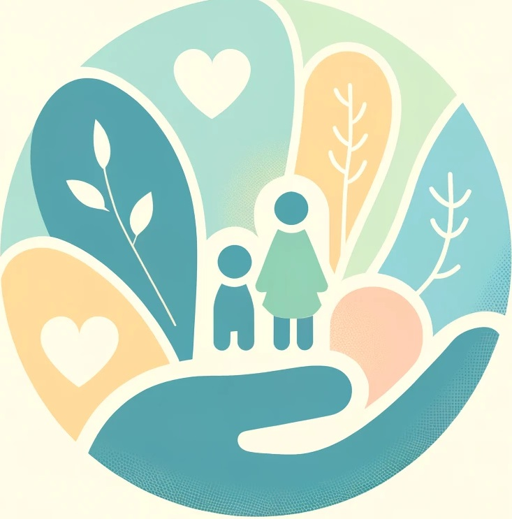

since 2003

아동 청소년 상담은 자녀의 심리적, 정서적, 사회적 발달을 지원하는 중요한 과정입니다. 이 상담은 자녀가 겪는
다양한 문제를 이해하고 해결하는 데 도움을 줍니다. 발달 단계에 맞춘 상담 접근은 자녀가 직면한 도전과 스트레스를 효과적으로 관리하도록 도와줍니다.
아동 청소년 상담의 주요 특징 중 하나는 놀이치료, 미술치료, 뇌과학, 자존감 회복치료 등 창의적인 방법을 사용한다는 점입니다. 이는 자녀가 자연스럽게 감정을
표현하고 소통할 수 있도록
돕습니다. 상담사는 자녀와의 신뢰 관계를 구축하여 안정적인 환경에서 자아를 탐색하고 성장할 수 있게 합니다.
상담의 유익한 점은, 첫째, 자녀가 자신의 감정을 이해하고 건강하게 표현하는 법을 배웁니다. 둘째, 스트레스와 불안을 줄이고 자존감을 높이는 데
도움이 됩니다. 셋째, 부모와 자녀 간의 소통을 개선하여 가정 내 관계를 강화합니다. 마지막으로, 학교생활과 사회적 상호작용에서 긍정적인 변화를 이끌어냅니다.
ADHD(주의력결핍 과잉행동장애)는 주의력결핍, 과잉행동, 충동성의 세 가지 범주의 행동들이 단독 혹은 복합적으로 나타나며 학교생활, 학습, 교사 및 친구와의 관계와
같은 여러영역에서 적응상의 어려움을 초래하는 장애입니다.
ADHD는 원인이 불명확하고 쉽게 관찰이 가능하여 종종 과잉진단의 우려가 있어, 체계적이고 정확한 심리검사를 통해 판별해야 합니다. 때로 정서적 어려움을 경험하는
아동청소년이 보이는 안절부절 못함과 과민함 등을 ADHD로 오인하여 센터를 방문하시기도 합니다.
마음동네는 아동청소년이 호소하는 다양한 증상에 대해 전문적인 심리 검사를 통해 신중하게 접근하며, 정서문제와 같은 다양한 공존질환에 대해서도 전문적인
심리상담과 심리치료를 제공합니다.
틱이란 갑작스럽고 빠르며 반복적이고 비율동적인 움직임이나 음성증상을 말하는 것으로 순간적인 눈 깜박임, 목 경련, 얼굴 찡그림이나 어깨 으쓱임 등으로 나타납니다.
틱증상은 주로 3~8세에 나타나기 시작하여 10~12세에 가장 많이 발생하다가 사춘기 이후부터 줄어들고, 성인기에 들어서면 60~80%에서 증상이 없어지거나
감소된다고 합니다.
가족 내에서 틱증상에 대한 지나친 두려움을 줄이고 가족 간 상호비방하지 않도록 도와야 합니다.
최근의 연구에 의하면 CSTC(cortico-striato-thalamo-cortical; 피질-선조체-시상-피질) 회로의 기능 이상과 관련된다고 합니다.
Leckman 등은 CSTC 회로 내의 갈 부위 간 상호작용에 혼란이 초래되어 운동 증상, 전조감각충동, 감정적인 증상이 일어난다고 주장하고 있습니다.
(틱장애/뚜렛장애의 이해와 치료, 임명호 저)
아동청소년 우울증은 성인들이 보이는 무기력감과 우울감의 호소와는 달리 돌발적인 행동으로 나타나는 경우가 많습니다. 반항하면서 고함을 지르거나,
짜증을 많이 내거나, 산만하고 충동적인 행동을 보이기도 하며, 두통이나 복통과 같은 신체증상을 동반하기도 합니다.
그러나 이런 행동을 사춘기에 나타나는 특징으로 착각하여 방치하게 되면 더 큰 문제를 일으킬 수도 있습니다.
아동청소년 우울의 경우, 마음동네 만의 특화된 가족치료를 통해 부모는 자신의 가치관과 성격구조가 자녀에게 어떤 영향을 미치는지 파악하고 개선하며,
자녀의 마음을 진심으로 이해하고 자녀와의 욕구충돌을 조율하는 것을 배우게 됩니다. 이러한 과정에서 부모와 자녀가 관계회복을 경험하게 되면 우울감
완화에 도움이 될 수 있습니다.
마음동네는 부모자녀간의 관계 갈등이 자녀 무기력감과 우울감의 원인으로 간주될 때, 상호간의 마음의 상처를 회복하고 관계 문제를 해결하는 치료적
방식을 실시함으로써 관계개선과 정서적 안정감의 회복을 돕습니다.
아동청소년이 학교에 적응하지 못하는 이유는 크게 개인적인 원인, 가족관계, 학교 환경의 원인 등으로 나눌 수 있습니다. 마음동네에서는 심층 검사를 통해 학교부적응의
원인을 파악하고 해결책을 제시합니다.
1. 개인적인 원인의 경우:
마음의 상처를 다루고 자존감 회복하기, 사회성 기술훈련, 감정소통 및 감정해소 방법 습득, 의사소통 훈련, 진로 및 적성 발견하기, 학습 및 인지치료 등을
실시합니다.
2. 가족 관계가 원인인 경우:
부모와 자녀의 관계 회복, 성격이해 및 갈등 조율, 부모의 스트레스 해결, 부부 관계의 회복을 다루게 됩니다.
3. 학교 환경이 원인인 경우:
학업 부적응, 대인관계 부적응, 정서적 부적응으로 나누어 치료합니다.
학업 부적응의 경우, 기초학습능력, 글자를 읽고 이해하는 능력, 학업 동기, 주의력 부분을 체크하여 학업의 어려움을 해결해줍니다.
대인관계 부적응의 경우, 왕따나 학교폭력, 교사와의 갈등에서 비롯된 상처를 치료합니다. 특히, 왕따로 인한 상처는 아이의 자존감을 심하게 훼손하여
평생 고통을 겪게 될 수 있습니다. 따라서 이러한 상처를 조기에 치료하여 자존감을 회복하고 건강한 관계를 맺고 살아갈 수 있도록 하는 것이 중요합니다.
정서적 부적응의 경우 불안, 걱정, 두려움, 강박, 우울 등으로 학교생활에 어려움을 겪는 경우입니다. 특히 학기 초나 시험 같은 상황에서 과도하게 두려움과 긴장을
느낄 때, 적절한 치료를 제공해야 합니다.
최근 뉴스에 의하면 유아동 스마트폰 중독 비율이 17.9%이며, 청소년 중독 비율은 무려 30.6%나 되는 것으로 보도되었습니다.
그리고 그 비율이 나날이 늘어가고 있습니다. 스마트폰 및 게임 중독은 성장하는 아이들에게 치명적일 수 있으며, 심각한 정서적인 문제를 초래할 가능성이 큽니다.
우리가 중독에 빠지는 이유는 다양합니다. 그런데 중독과 정서처리는 관련성이 높습니다.
중독이 되면 중독행위를 통해 정서적인 배고픔 즉 정서적인 보상을 하고 싶어집니다.
그런데 부모가 이러한 자녀의 정서적인 배고픔을 인식하지 못한 채 나타나는 행동만으로 자녀를 비난하면서 가족관계 갈등이 깊어진다면 이는 더욱 심한 중독행위로
이어질 소지가 있습니다.
마음동네는 중독으로 일상생활에 방해를 겪는 자녀의 건강한 정서처리를 도와 긍정적인 정서는 증진하고 부정적인 정서는 해소하며
현실에서의
대인관계 및 부모와의 관계를 회복하고 중독에서 벗어나도록 돕는 치료적 개입을 제공합니다.
학습장애란 읽기, 쓰기, 추론, 산수계산 등의 능력과 획득 및 사용에 어려움을 느끼는 증상을 의미합니다.
학습장애는 ADHD, 난독증, 언어발달문제, 지능문제, 정서문제 등이 복합적으로 작용하여 나타나는 현상입니다. 학습장애를 가진 사람들은 공통적으로 정보의
입력-처리-출력과정이라는 신경학적 정보처리과정에 문제가 있습니다. 감각기관들에 문제가 생기면 자신의 욕구, 감정, 생각을 인지, 조절하는 능력이 떨어집니다. 따라서
감각기관의 문제를 해결해주면 인지 기능과 비인지 기능이 회복이 되며 학습 능력도 향상됩니다.
불안해 할 필요가 없는 상황에서도 불안해 하거나 정도 이상으로 지나치게 불안해 하는 경우에 해당합니다.
아이들의 경우 부모와 떨어짐으로써 공포와
두려움을 경험한 경우 심하게 불안을 느낄 수 있습니다. 또한 시험이 가까워올 때 많이 불안해하고, 특히 시험 기간 내내
긴장하며 실수를 한다면 시험불안일 수 있습니다. 과도한 불안감이 느껴지면 자율신경과민증이 나타나, 우울이나 중독으로 이어질 수가 있습니다.
불안은 미래에 안 좋은 일이 일어날 것 같은 느낌인데, 이는 과거에 경험한 안 좋은 경험이 미래에도 반복하여 나타날까봐 느끼는 두려움입니다.